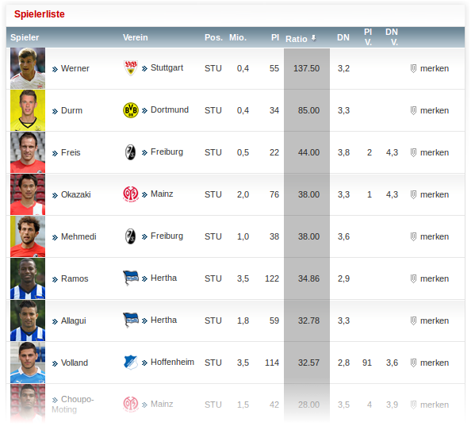

This is a simple bookmarklet to sort kicker.de player rankings by score/price-ratio. It is very helpful to find good candidates in the kicker.de interactive manager game.
To use it simply drag this button to your bookmarkt panel: Sort Kicker Stats
Go to http://manager.kicker.de/interactive/bundesliga/spielerliste/ and click the bookmarklet to get an additional column called "Ratio". The table gets sorted by this new value. It is simply the ratio between score and price, i.e. the score per price in millions. Currently, it is only tested on the mentioned page, but it possibly works on other ranking pages as well.
This is how it looks like:

If you want to contribute to it, please fork my github repo.